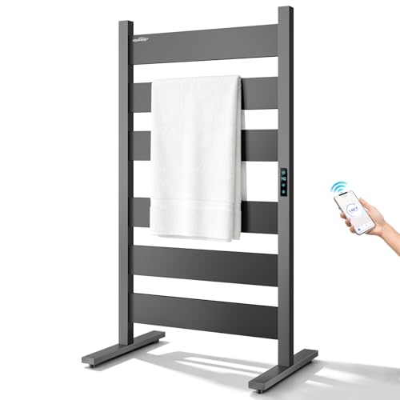
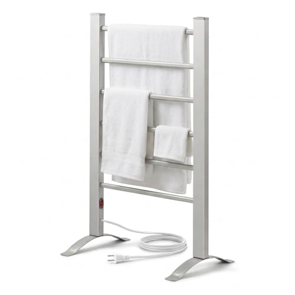
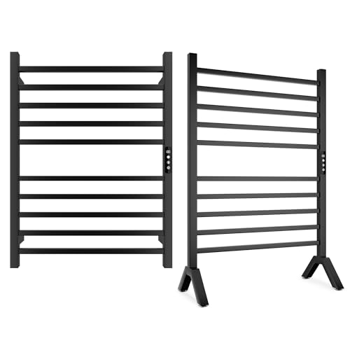
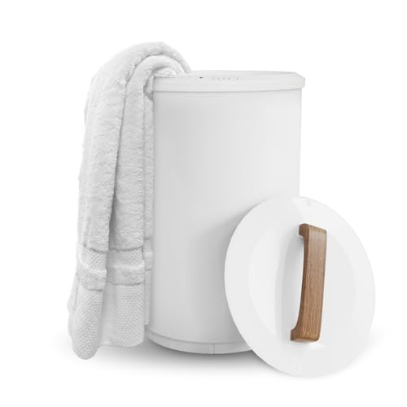
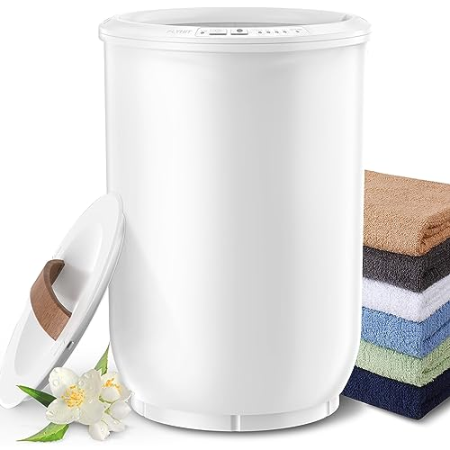
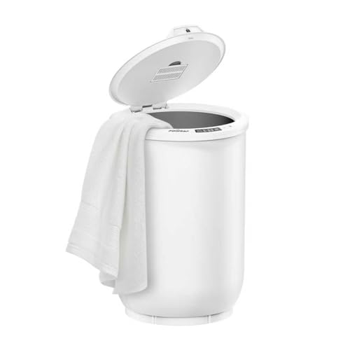
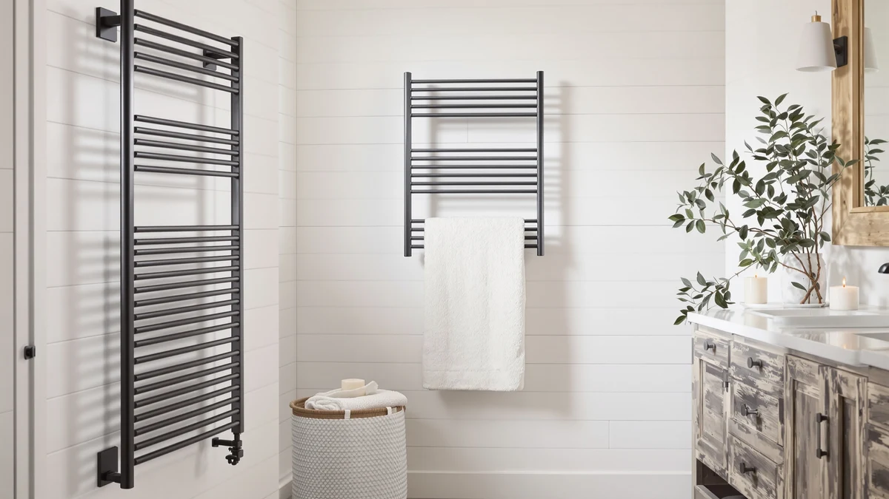

The first choice in a towel warmer is bucket or rack, not brand.
A bucket wraps a rolled towel in heat and has it hot within minutes; an open rack warms several towels more slowly and dries them between showers. After that, the warmer you keep and the one you regret differ in two places: how it installs, plug-in or hardwired, and how much it holds against the size of your towels. We compare warmers on those points, using spec sheets, current Amazon prices and what verified owners report.
Our 7 picks, side by side
From our full comparison of towel warmers. Each one wins a specific job.
| Pick | Product | Price | Buy |
|---|---|---|---|
| Our Pick | AAOBOSI Large Towel Warmers for Bathroom with Digital DisplayFast, roomy, and affordable | $89.99 | Check price |
| Best Rack |  Aquatrend Towel Warmers for BathroomPolished, roomy, and built-in looking | $179.99 | Check price |
| Best Mid-Priced Rack |  Pursonic TW300 Towel Warmer Rack for BathroomSimple, freestanding, and mid-priced | $101.99 | Check price |
| Most Flexible Rack |  Poloma Wall Mounted & Freestanding Towel Warmer Rack for BathroomsFlexible, large, and cheaper than the premium racks | $121.36 | Check price |
| Best Compact Bucket |  SAMEAT Heated Towel Warmers for BathroomQuick, compact, and timer-equipped | $79.94 | Check price |
| Best for Bath Sheets |  FLYHIT Large Towel Warmer for BathroomLarge, fast, and easy to live | $79.95 | Check price |
| Best Budget Bucket |  POWSAF Towel Warmer Luxury TowelAffordable, straightforward, and quick | $69.98 | Check price |
Just published
New reviews and guides go up every day.

Meijieluo Wall Mounted Towel Warmer Rack Review

Live Fine Towel Warmer Review

Caldayx Foldable Heated Towel Rack 13-Bar Review

AyiDrmjj Heated Towel Rack Review
Find the right towel warmer for your bathroom
Guides and reviews from across the site, grouped by the question they answer.
Installation, setup and care
- The Best Freestanding Heated Towel RacksComparison
- Best Wall Mounted Towel Warmers for BathroomComparison
- Best Portable Towel Warmers: No Installation RequiredComparison
- The Best Wall-mounted Towel Warmer DrawersComparison
- How to Hang Towel WarmerGuide
- The Best Hardwired Towel WarmersComparison
+ 24 more in all articles
Size and capacity
- Best Towel Warmer for Small SpacesComparison
- Best Foldable Towel Warmers: Space-Saving PicksComparison
- The Best Towel Warmer Drawers For small bathroomsComparison
- The Best Heated Towel Racks For small bathroomsComparison
- Towel Warmer Sizing GuideGuide
- Best Towel Warmer for Small Bathroom: 7 Top PicksComparison
+ 8 more in all articles
Timers, Wi-Fi and safety
- Best Towel Warmer with AromatherapyComparison
- The Best With Timer Towel WarmersComparison
- Best Towel Warmer Fragrance Discs: Replacement Scent PadsComparison
- The Best With Timer Towel Warmer DrawersComparison
- Best Towel Warmer With Child Lock: 7 Top PicksComparison
- Best Towel Warmer With Fragrance: 7 Top PicksComparison
+ 10 more in all articles
Salon, spa and hot tub
- Best Towel Warmer for SalonComparison
- Best Towel Warmer for Barber ShopComparison
- Best Towel Warmer for Massage TherapistComparison
- Best Towel Warmer for Outdoor Hot Tub: 7 Top PicksComparison
- Best Towel Warmers for Hot Tub: 3 Top PicksComparison
- Best Towel Warmers for Spa: 7 Top PicksComparison
+ 5 more in all articles
Budget, luxury and gifts
- The Best Budget Heated Towel RacksComparison
- The Best Luxury Towel WarmersComparison
- Best Towel Warmers to Gift in 2026 (For People Who Are Always Cold)Comparison
- The Best Budget Towel WarmersComparison
- The Best Budget Towel Warmer DrawersComparison
- The Best Towel Warmer Drawers Under $200Comparison
+ 12 more in all articles
Buckets, racks and drawers
- The Best Electric Towel Warmer DrawersComparison
- Consumer Reports Best Towel Warmers for BathroomComparison
- Best Heated Towel Rail BrandsComparison
- Towel Warmer Bucket vs. Cabinet: Which Style Should You Buy in 2026?Comparison
- The Best Towel Warmers For cold climatesComparison
- The Best Electric Heated Towel RacksComparison
+ 49 more in all articles
How we research
What we compare
- Type: a bucket heats a rolled towel or two in minutes; an open rack warms several towels and dries them between uses.
- Installation: plug-in buckets and racks, freestanding or wall-mounted, or hardwired racks that need an electrician.
- Capacity and controls: bucket volume in liters or the number of bars, and a timer or auto shut-off.
- Price: Amazon's current price, checked every night.
- What verified owners report after months of daily use.
What we don't do
We don't run a lab, and we don't claim to have installed or handled these products ourselves. Our picks come from published specifications, current Amazon prices and what verified owners report again and again.
Every Amazon link on this site is an affiliate link. It never decides the ranking.
Common questions
Bucket or rack: which towel warmer should I get?
A bucket wraps a rolled towel in heat and gets it hot within minutes, which suits anyone who wants a warm towel right out of the shower. An open rack warms more slowly but holds several towels and dries them between uses, which helps in a damp or windowless bathroom. Our buying guide compares the types in detail.
Do I need an electrician to install a towel warmer?
Not for a plug-in model. Buckets, freestanding racks and plug-in wall racks run from an ordinary outlet, which in a bathroom should be GFCI-protected, and an extension cord is best avoided. Hardwired racks connect to the home circuit, and that part is a job for a licensed electrician; our guide on installing a towel warmer covers both.
What size towel warmer do I need?
Match it to your towels and your household. A bucket's capacity is listed in liters, so check that it takes your largest towel or bath sheet; on a rack, count the bars and check the rail width, since a narrow rail struggles with a folded bath sheet. Our sizing guide covers the measurements.